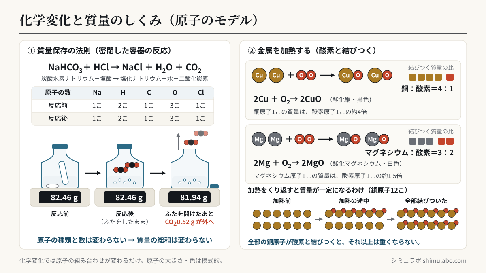
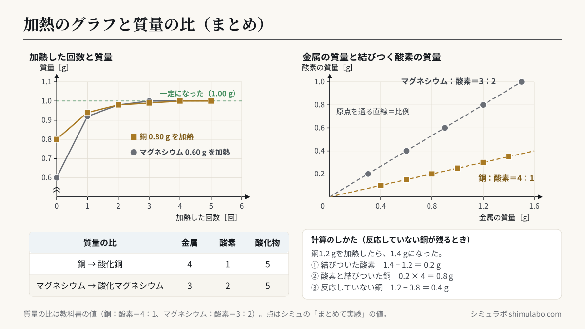

このシミュレーションでわかること
化学変化の前後で、物質全体の質量は変わりません（質量保存の法則）。原子の組み合わせが変わるだけで、原子の種類と数は変わらないからです。気体が発生する反応でも、密閉した容器の中なら質量は変わらず、ふたを開けると出ていった気体の分だけ軽くなります。また、金属を加熱すると空気中の酸素と結びついて質量が増えますが、結びつく酸素の質量には限度があり、加熱をくり返すと質量は一定になります。金属の質量と結びつく酸素の質量は比例し、銅：酸素＝4：1、マグネシウム：酸素＝3：2の質量の比で結びつきます。
授業での使い方
導入：質量は変わる？変わらない？
「② 密閉した容器の反応」で、炭酸水素ナトリウムとうすい塩酸を、ふたをした容器の中で反応させるとき、電子てんびんの値がどうなるかを予想させます。反応させても値は変わらず、ふたを開けると二酸化炭素が出ていって軽くなることを確かめ、「質量が減ったのは、物質がなくなったからではなく、気体として外へ出ていったから」と気づかせます。沈殿ができる反応（うすい硫酸と水酸化バリウム水溶液）では、ふたを開けても質量が変わらないことも比べられます。
展開：加熱をくり返してグラフにする
「① 金属を加熱する」で金属と質量を選び、「🔥 加熱する」をくり返し押します。質量は増えていきますが、増え方がだんだん小さくなり、やがて一定になります。一定になると、右のグラフに「金属の質量」と「結びついた酸素の質量」の点が記録されます。金属の質量を変えて何回か実験し（または「📊 まとめて実験」）、点が原点を通る直線の上に並ぶことから、金属と酸素が一定の割合で結びつくことを見いださせます。「誤差：なし」のボタンを押して「誤差：あり」にすると、実際の実験のように点が少しずれるので、直線の引き方や誤差の考え方を話し合う材料になります。
まとめ：原子のモデルで説明する
下の原子のモデルで、銅原子と酸素原子が1こずつ結びつくこと、すべての銅原子が酸素と結びつくとそれ以上は重くならないことを確かめます。銅原子1この質量が酸素原子1この約4倍なので、質量の比が銅：酸素＝4：1になることにつなげます。
生徒への問いの例
- ふたをした容器の中で炭酸水素ナトリウムとうすい塩酸を反応させたあと、ふたを開けると質量が減るのはなぜでしょう。
- 銅の粉末を加熱しても、質量がある値より大きくならないのはなぜでしょう。原子のモデルを使って説明しましょう。
- 銅1.2 gを加熱したら、質量が1.4 gになりました。まだ酸素と結びついていない銅は何gでしょう。（答え：0.4 g）
しくみ・解説






図はタップすると大きく表示されます。授業のプリント・スライド・板書計画に自由に使えます（出典「シミュラボ」とページのURLを添えてください）。
質量保存の法則
化学変化では、原子の組み合わせが変わって別の物質ができますが、原子そのものがなくなったり、新しくできたりすることはありません。反応の前後で原子の種類と数が同じなので、反応に関係する物質全体の質量（質量の総和）は変わりません。これを質量保存の法則といいます。状態変化（とける・沸騰するなど）でも質量は変わりません。
NaHCO3＋HCl → NaCl＋H2O＋CO2
| Na | H | C | O | Cl | |
|---|---|---|---|---|---|
| 反応前（NaHCO3＋HCl） | 1こ | 2こ | 1こ | 3こ | 1こ |
| 反応後（NaCl＋H2O＋CO2） | 1こ | 2こ | 1こ | 3こ | 1こ |
密閉した容器と、ふたを開けた容器
| 実験 | 反応前 | 反応後 | わけ |
|---|---|---|---|
| ふたをしたまま反応させる | 82.46 g | 82.46 g | 変わらない（二酸化炭素は容器の中にある） |
| そのあと、ふたを開ける | 82.46 g | 81.94 g | 二酸化炭素0.52 gが出ていった |
| はじめからふたをしない | 82.46 g | 81.94 g | 発生した二酸化炭素がそのまま出ていく |
| 沈殿ができる反応（硫酸＋水酸化バリウム） | 96.35 g | 96.35 g | 気体が出ないので、ふたを開けても変わらない |
表の値はこのシミュレーションの例です（炭酸水素ナトリウム1.00 gと十分な量のうすい塩酸を、容器・ふたごとはかった値）。炭酸水素ナトリウム1.00 gから発生する二酸化炭素は、化学反応式から 1.00×44÷84≒0.52 g と計算できます。開いた容器で質量が減っても、出ていった気体の質量まで合わせれば、質量の総和は変わっていません。
金属を加熱したときの質量の変化
銅やマグネシウムの粉末をステンレス皿に入れて加熱すると、空気中の酸素と結びついて酸化銅（黒色）や酸化マグネシウム（白色）になり、結びついた酸素の分だけ質量が増えます。粉末をよくかき混ぜて加熱と質量の測定をくり返すと、増え方はしだいに小さくなり、やがて質量が変わらなくなります。金属がすべて酸素と結びつくと、それ以上は酸素と結びつかないからです。
| 加熱した回数 | 銅 0.80 g | マグネシウム 0.60 g |
|---|---|---|
| 0回（加熱前） | 0.80 g | 0.60 g |
| 1回 | 0.94 g | 0.92 g |
| 2回 | 0.98 g | 0.98 g |
| 3回 | 0.99 g | 1.00 g |
| 4回 | 1.00 g | 1.00 g（一定） |
| 5回 | 1.00 g（一定） | — |
表はこのシミュレーションのモデルの値です（1回の加熱で、残っている金属のうち銅は7割、マグネシウムは8割が反応するとしています）。
金属の質量と結びつく酸素の質量（比例のグラフ）
| 銅 | 結びつく酸素 | 酸化銅 |
|---|---|---|
| 0.40 g | 0.10 g | 0.50 g |
| 0.80 g | 0.20 g | 1.00 g |
| 1.20 g | 0.30 g | 1.50 g |
| 2.00 g | 0.50 g | 2.50 g |
| マグネシウム | 結びつく酸素 | 酸化マグネシウム |
|---|---|---|
| 0.30 g | 0.20 g | 0.50 g |
| 0.60 g | 0.40 g | 1.00 g |
| 0.90 g | 0.60 g | 1.50 g |
| 1.20 g | 0.80 g | 2.00 g |
金属の質量を横軸、結びつく酸素の質量を縦軸にとると、点は原点を通る直線の上に並びます（比例）。直線の傾きから、銅：酸素＝4：1（銅：酸化銅＝4：5）、マグネシウム：酸素＝3：2（マグネシウム：酸化マグネシウム＝3：5）がわかります。
原子のモデルで考える
2Mg＋O2 → 2MgO（マグネシウム原子1こと酸素原子1こが結びつく）
どちらも金属原子と酸素原子が1：1の数の割合で結びつきます。原子1この質量は、銅原子が酸素原子の約4倍、マグネシウム原子が酸素原子の約1.5倍なので、質量の比はそれぞれ銅：酸素＝4：1、マグネシウム：酸素＝3：2（＝1.5：1）になります。
計算問題の解き方（例題）
例題1 銅2.0 gを完全に酸化させると、酸化銅は何gできるか。
銅：酸素＝4：1 より、結びつく酸素は 2.0×1/4＝0.5 g。酸化銅は 2.0＋0.5＝2.5 g（銅：酸化銅＝4：5 から 2.0×5/4 と求めてもよい）。
例題2（反応していない銅が残る問題） 銅1.2 gを加熱したところ、加熱後の質量は1.4 gになった。まだ酸素と結びついていない銅は何gか。
増えた質量が結びついた酸素なので 1.4－1.2＝0.2 g。0.2 gの酸素と結びついた銅は 0.2×4＝0.8 g。結びついていない銅は 1.2－0.8＝0.4 g。このときできた酸化銅は 0.8＋0.2＝1.0 g です。
例題3 マグネシウム0.9 gを完全に酸化させると、酸化マグネシウムは何gできるか。また、酸化マグネシウムを2.0 g得るには、マグネシウムは何g必要か。
マグネシウム：酸化マグネシウム＝3：5 より、0.9×5/3＝1.5 g。2.0 g得るには 2.0×3/5＝1.2 g。
例題4 同じ質量の酸素と結びつく銅とマグネシウムの質量の比はいくらか。
酸素1 gと結びつくのは、銅4 g、マグネシウム1.5 g。よって銅：マグネシウム＝4：1.5＝8：3。
例題5（発展） 銅とマグネシウムの混合物3.0 gを完全に酸化させると、4.5 gになった。混合物中の銅は何gか。
銅を x g、マグネシウムを（3.0－x）g とすると、結びついた酸素は x/4＋（3.0－x）×2/3＝4.5－3.0＝1.5。これを解くと x＝1.2。銅1.2 g、マグネシウム1.8 g。
関連：酸化と還元でも質量は保存される
酸化銅と炭素の粉末を混ぜて加熱すると、酸化銅は酸素をうばわれて銅にもどり（還元）、炭素は酸化されて二酸化炭素になります（2CuO＋C → 2Cu＋CO2）。たとえば酸化銅2.00 gと炭素0.15 gが過不足なく反応すると、銅1.60 gと二酸化炭素0.55 gができ、2.00＋0.15＝1.60＋0.55 で質量の総和は変わりません。試験管の中の質量が減るのは、二酸化炭素が外へ出ていくからです。
このシミュレーションで単純化していること
- 質量の比は教科書の値（銅：酸素＝4：1、マグネシウム：酸素＝3：2）で計算しています。原子の質量（原子量）から計算すると、銅：酸素＝3.97：1、マグネシウム：酸素＝3：1.97 です（高校の化学で学びます）。
- 加熱1回で反応する割合（銅7割、マグネシウム8割）と、電子てんびんの値（0.01 gの位まで）はモデルです。「誤差：あり」では、粉末の中まで反応しきらない分（銅で2〜10％、マグネシウムで1〜6％）と、0.01 gの測定のずれを入れています。実際の実験では、マグネシウムが空気中の窒素とも反応したり、加熱中に粉末が飛び散ったりして、比がずれることがあります。
- 密閉した容器の実験では、炭酸水素ナトリウム1.00 gと十分な量のうすい塩酸を使い、発生した二酸化炭素0.52 gがふたを開けると全部出ていくとしています。実際には、二酸化炭素の一部が水にとけて残るため、減る質量は計算より少し小さくなります。また、容器がふくらむことによる浮力の変化は考えていません。
- 原子のモデルの原子の数（12こ）や大きさ・色は模式的なものです。
参考
- 文部科学省「中学校学習指導要領（平成29年告示）解説 理科編」第1分野（4）化学変化と原子・分子（ウ）化学変化と物質の質量 中学校学習指導要領解説
- 中学校理科の教科書（第2学年「化学変化と原子・分子」の単元）
- 日本化学会 原子量専門委員会「原子量表」（原子量 Cu 63.55、Mg 24.31、O 16.00、C 12.01、Na 22.99）
引用・転載について
本ページのシミュレーション結果・数値は、出典を明記いただければブログ・ニュース記事・SNS・授業や社内資料への引用を歓迎します。事前連絡は不要です。
出典：シミュラボ「化学変化と質量シミュレーター（銅・マグネシウムの酸化）」 https://shimulabo.com/sims/kagaku-shitsuryou/よくある質問
- 質量保存の法則とは何ですか？
- 化学変化の前後で、反応に関係する物質全体の質量が変わらないというきまりです。化学変化では原子の組み合わせが変わるだけで、原子の種類と数は変わらないため、質量の総和も変わりません。
- 気体が発生する反応で、ふたを開けると質量が減るのはなぜですか？
- 発生した気体（炭酸水素ナトリウムと塩酸の反応では二酸化炭素）が容器の外へ出ていくからです。密閉したままなら質量は変わりません。出ていった気体の質量を合わせれば、質量の総和は反応の前後で同じです。
- 銅を加熱し続けても、質量が一定になるのはなぜですか？
- 銅がすべて酸素と結びついて酸化銅になると、それ以上は酸素と結びつかないからです。一定の質量の銅と結びつく酸素の質量には限度があり、その限度は銅の質量に比例します。
- 銅と酸素が4：1の質量の比で結びつくのはなぜですか？
- 銅原子と酸素原子は1こずつ結びつき（2Cu＋O₂→2CuO）、銅原子1この質量が酸素原子1この約4倍だからです。マグネシウム原子は酸素原子の約1.5倍の質量なので、マグネシウム：酸素＝1.5：1＝3：2になります。
- 反応していない銅の質量はどうやって求めますか？
- まず「加熱後の質量－加熱前の質量」で結びついた酸素の質量を求め、それを4倍して酸素と結びついた銅の質量を出します。はじめの銅の質量からそれを引いた値が、反応していない銅の質量です。例：銅1.2 gが1.4 gになったら、酸素0.2 g、結びついた銅0.8 g、反応していない銅0.4 g。
- スチールウールを燃やすと重くなるのは、質量保存の法則に反しませんか？
- 反しません。鉄が空気中の酸素と結びついて酸化鉄になるため、結びついた酸素の分だけ重くなります。反応した酸素の質量まで合わせれば、反応の前後で質量の総和は変わりません。